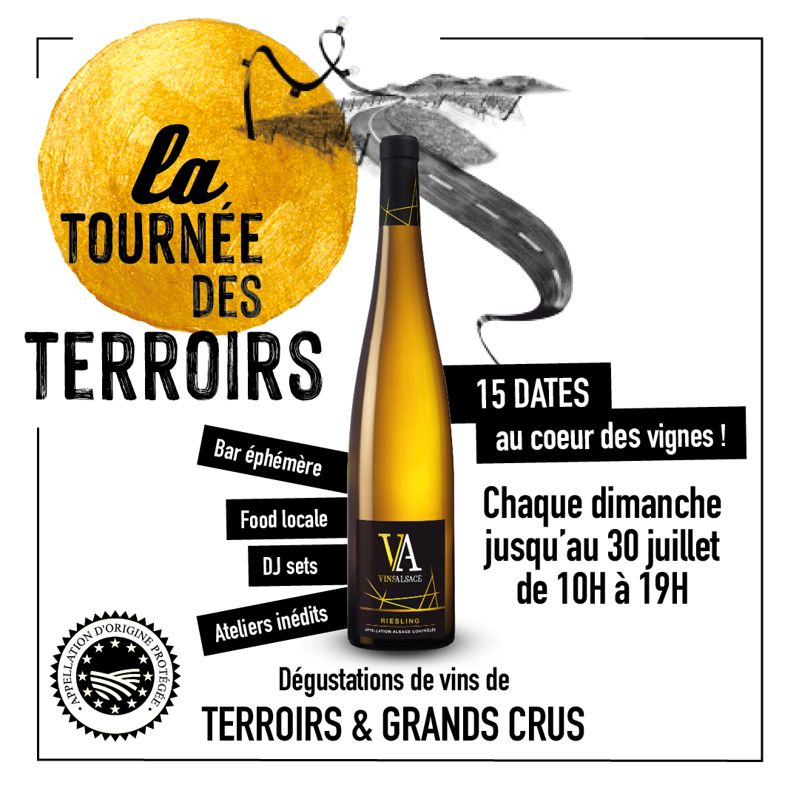
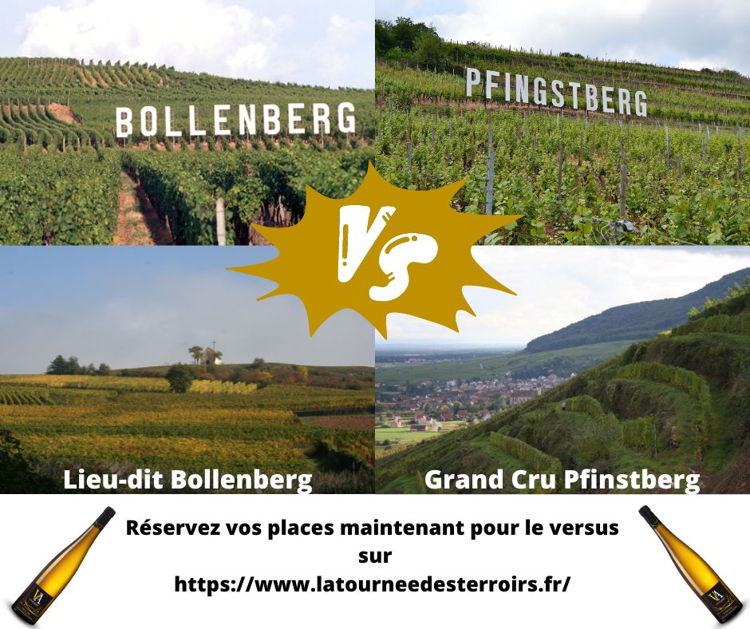

À mon arrivé au CIVA, un événement était en train d’être mis en place « La Tournée des Terroirs ». Il s’agissait d’un événement d’une durée de 15 semaines qui proposait la découverte des vins d’Alsace par la découverte d’un vignoble. Puisque, chaque semaine l’événement aller dans un nouveau vignoble qui se situait dans un autre village afin de faire découvrir l’ensemble de la route des vins d’Alsace.
J’ai participé activement à la communication de cet événement, car j’ai dû m’occuper de la communication sur un événement Facebook durant toute la durée de mon stage. Pour ce faire, j’ai dû proposer un calendrier éditorial à mon maître de stage qui devait recouvrir tous les aspects de cet événement. Après validation de ce calendrier éditorial, j’ai ensuite chaque semaine pendant les 10 semaines dans le CIVA effectué toutes les publications de la semaine en cours. Je réalisais le visuel de la publication, mais aussi la description.

Quand les publications été publié, j’ai aussi eu le rôle de Community manager, puisque je modérais, mais aussi répondais au commentaire qu’il y avait sous les publications. Arrivé à la semaine de mon départ, mon maître de stage m’a demandé de préparer toutes les publications jusqu’à la fin de l’événement. Puisque j’avais réalisé un bon travail et que ce travail été ma responsabilité durant tout mon stage.